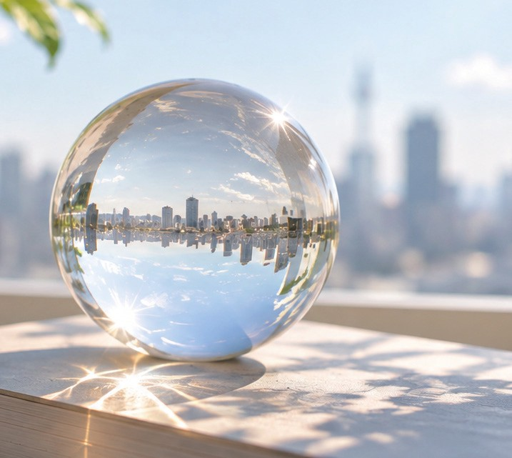
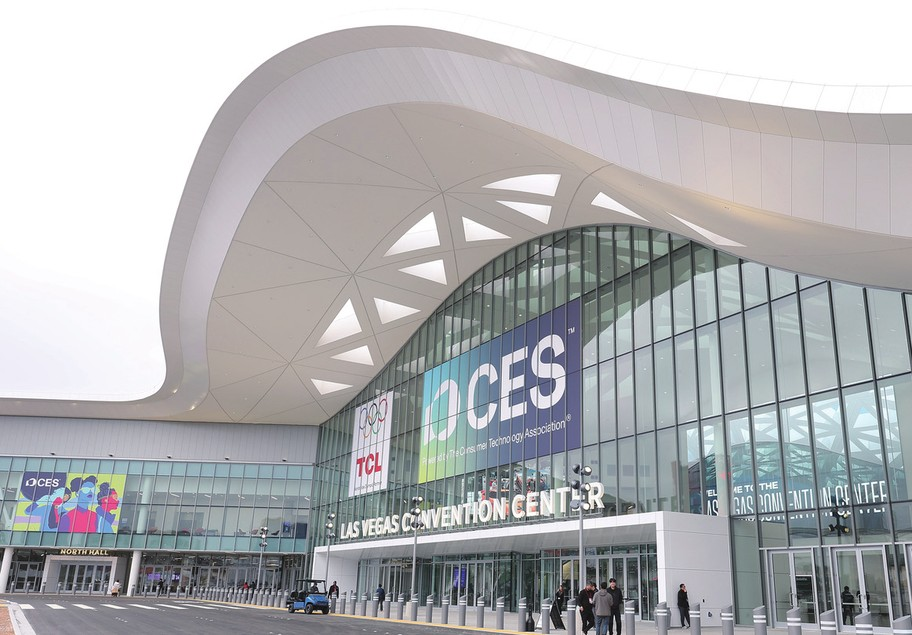
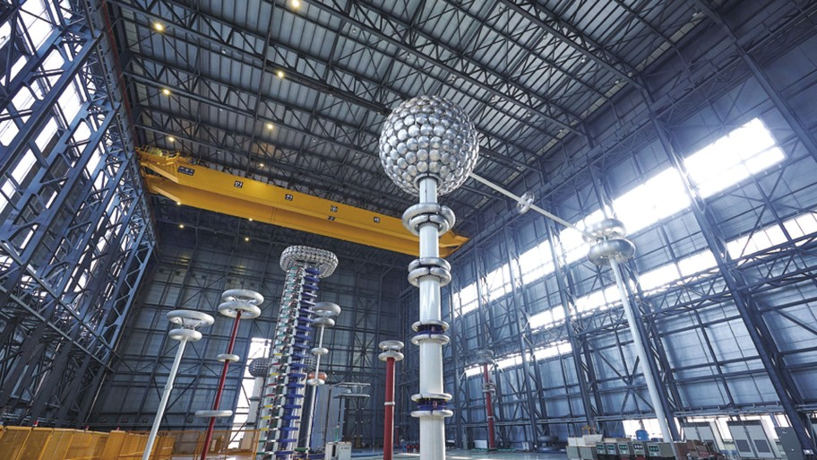
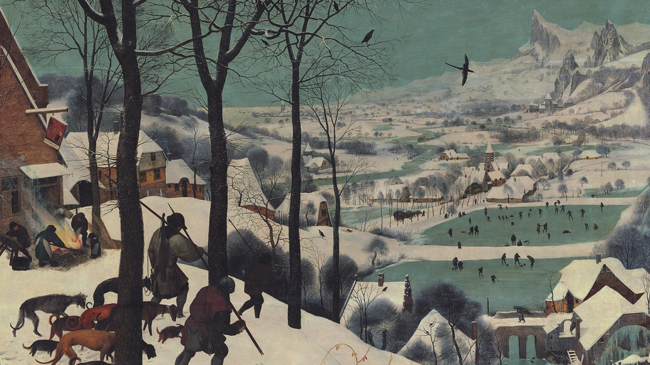
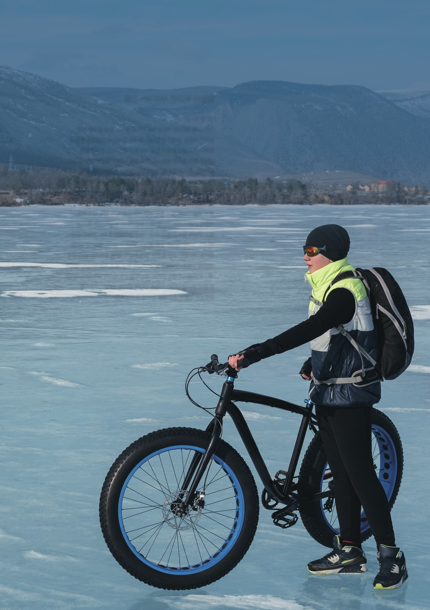
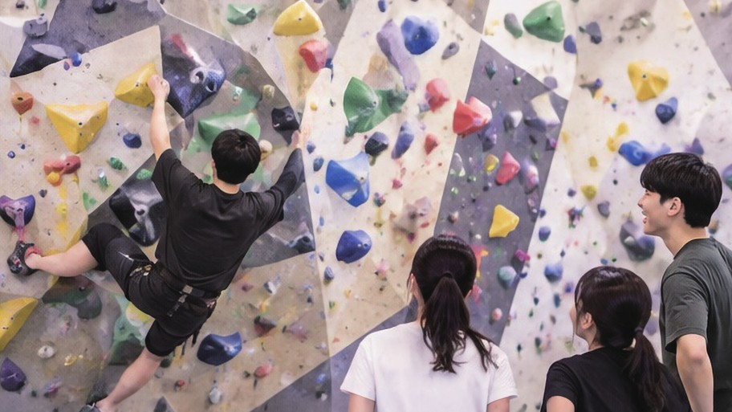

PERSPECTIVE
새로운 발견은 직관에서 시작될까, 경험에서 시작될까?
일단 느낌이 오면 시작하는 편인가, 직접 해봐야 확신이 생기는 편인가. 직관과 경험이 새로운 발견으로 이어지는 방법.
2027.01 vol.643
2027 January vol.643
이달의 키워드
새로운 장면
New Scene
같은 풍경도 다른 각도에서 바라보면 새로운 장면이 됩니다. 1월호는 익숙한 화면에 새로운 질문을 입력해 보는 2027년의 첫 장면, 그리고 현장과 일상에서 이미 시작된 새로운 장면들을 담았습니다.
SPOTLIGHT · INCEPTION 새로고침! 화면은 그대로인데, 무언가 달라져 있을 때02
지금 한전에서 일어나는 이슈 · 기술 · 현장

ISSUE NOW
영업본부를 고객서비스혁신본부로 바꾼 한전, 9월 혁신 워크숍에서 공개한 비전과 실행 과제.
기사 읽기
NEXT WAVE
설비가 보내는 신호를 실시간으로 읽고 고장을 미리 막는다. CES 2026 혁신상을 받은 한전의 전력설비 예방진단 솔루션 SEDA.
기사 읽기
ON SITE
23만 평 부지에 31개 시험장. HVDC부터 765kV 송전선로, BESS까지 대한민국 전력기술이 검증되는 고창전력시험센터.
기사 읽기
KEPCO NEWS
SK하이닉스 전력공급 협약, 한·미 전략적 투자, 국산 NPU 변전소 실증, 가을철 산불 예방까지. 이달의 한전 소식 8건.
기사 읽기03
일상을 넓히는 문화 · 환경 · 여행 · 체험

TRAVEL MATE
설악산에서 영랑호, 영금정, 아바이마을까지. 속초고성지사 직원이 추천하는 산에서 바다로 이어지는 겨울 속초.
기사 바로가기 TRAVEL MATE 산과 바다 사이, 머물고 싶은 도시 속초
ART & CULTURE 사람은 왜 풍경 속에 들어왔을까? 눈 덮인 마을로 돌아가는 사냥꾼과 안개 바다 앞에 홀로 선 방랑자. 두 그림 속 작은 사람이 풍경의 의미를 바꾸는 방법.
GREEN LIFE 겨울왕국에서 길을 잃다 얼어붙은 호수와 강이 열어주던 길. 기후변화로 얼음이 사라지며 함께 끊어질 위기에 놓인 세 지역의 길과 전통.
REFRESH 한 걸음씩 더 높이, 처음 만나는 클라이밍의 세계 “저기까지 갈 수 있을까?” 인천본부 ICT운영부 직원 네 명이 서로 응원하며 처음 오른 실내 클라이밍 벽.이번 호 기사에 한 표를 던지고, 다음 호 소식을 받아 보세요.